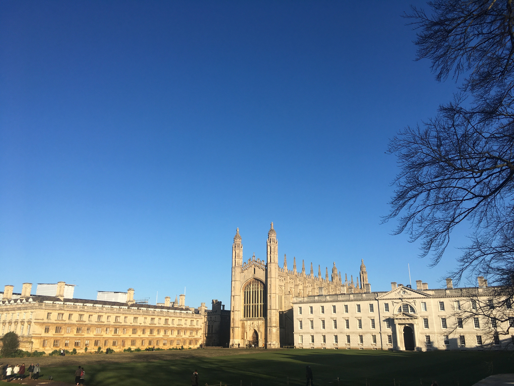

Я уеду жить в ..
Данная "статья" исключительно для моей дырявой башки, которая постоянно что-то забывает. Чем я руководствовалась при поездке в Лондон.
Попасть в Англию мне доводилось не в первой, В 2013 году мы с папой вычитали что можно получить визу на сутки, если у вы вынуждены ждать свой рейс в одном из аэропортах Англии. Вот такой вот у нас был длинный путь через Москву в Чехию, с пересадкой в Лондоне на 12 часов. Два радостных азиата после посадки побежали на пункт к выходу из зеленого коридора, после долгого разговора. Ну в общем нас конечно же не впустили.

С Ural Airlines можно провести с собой багаж 10кг + ручная кладь 5кг.(Строго проверяется, на обратном пути у меня чуть не изъяли бутеры) Самый дешевые билеты у Wizz Air (от 1700 рублей), но багаж за дополнительную плату. Приятная цена за перелет в другую страну.
Труба или по-нашему метрополитен

Лондонское метро является старейшим в мире. Значительная его часть была проложена под землей, отсюда и название “Underground”. Однако, местные называют метро коротким словом – “The Tube”, потому что оно проходит по тоннелям, то есть по трубам. При поездке по центровым линиям можно услышать как скрипят вагоны, очень захватывающе хах. Но в отличие от Московских станций, где каждая буквально выглядит как какое-то музейное сооружение, Лондонские метро отличаются суперской минималистикой и простотой (но ездить по центру в час пик это жеска).
Чо по чем?
Лондонские метро не только самые старейшие в мире, но и самые пипяо дорогущие. Карта метро поделена на дистрикты или зоны (1-2 центр, 3-4 типа типа, остальное окраина). Чем ты дальше живешь - тем тебе дороже будет добраться до центра. Например типа когда ты живешь такой в Москве и хочешь добраться до одного конца города до другого, в любом случае цена у тебя будет одна(44 рубля по карте тройка). В лондоне же, разовый билет в пределах центра составит рублей 400.

Но можно воспользоваться картой Oyster, безлимитная поездка на неделю по зоне 1-2 и автбоусам составит ~ 3 тыс (В день ~500рублей). Можно сколько угодно ездить по центру и на автобусах. Очень удобная штука, я жила в зоне 6-7 и просто добиралась до второй зоны на автобусе. Жить можно.

Музеи
Одна из приятных плюшечек Лондона это бесплатные музеи. Основные и самые главные музеи берут у входа только добровольный донэйшн, а в такие как музей Шерлок Холмс - вход платный (или закрытые показы в отдельных залах). Некоторые музеи настолько огромные, что невозможно все обойти за день, но ты всегда сможешь без проблем вернуться. В музеях можно заметить группы школьников или студентов, которые проводят уроки прямо возле экспонатов, тупа респект власти за духовное развитие граждан. Некоторые просто приходят порисовать, посидеть в тишине или просто пообщаться.

Вот еще немного чего :
Еда да!
Отдельно хочется написать про мою любимую тему - еда. В одном из самом затратном городе в мире стоимость еды соответственная. В стране где местная кухня состоит из пивчанского и автенун ти нужно как то питаться. Начнем с того что в обычных кафе с рублями тяжеловато приходится, стартовое блюдо обходится от 5 фунтов + основное 10 фунтов, средний обед приходится на 12-15 фунтов в среднем. Для таких жмотов как я есть очень круто выход - закупаться в маркетах полуфабрикатами. Тут тебе и индийская, китайская, японская кухня! Причем полуфабрикаты не означает по типу доширака, вполне себе здоровый набор на ужин.
В обеденное время меня очень спасал IKEA со своими фирменными фрикаледьками с брокколи и клюквенным соусом.
Какая Англия без старинных замков?
Оксфордский университет появился во второй половине 11-го века в качестве независимого академического студенческого центра. Самые известные колледжи в Оксфорде имеют плату за вход, там же в бодлианской библиотеке снимали некоторые части Гарри Поттера, а по парку гуляла Алиса в стране чудес. Студентов было трудно заметить в городе, т.к. население Оксфорда составляет порядком 160 тыс человек. Считается, что из-за внутренних разногласий оксфордские ученые покинули университет и образовали Кембридж на противоположной стороне Лондона. Мне больше по душе пришелся Кембриджский университет. Население 120 тыс человека, узкие улочки, старинные пабы и самое прикольное, что можно было заметить студентов, идущих на лекцию или просто занимающих в библоиотеках, когда за окном толпа китайских туристов фотает все вокруг.
Тут, в одних из колледжей учились Ньютон, Дарвин, принц Уэльский и другие высшие умы.